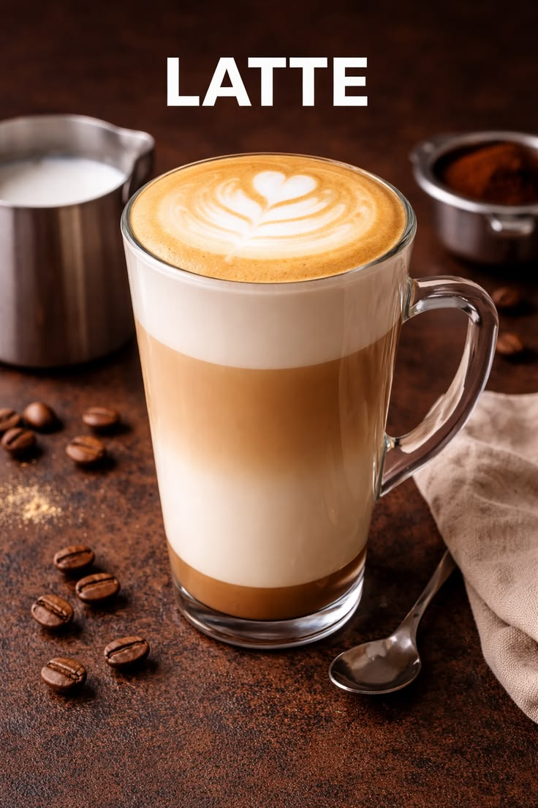
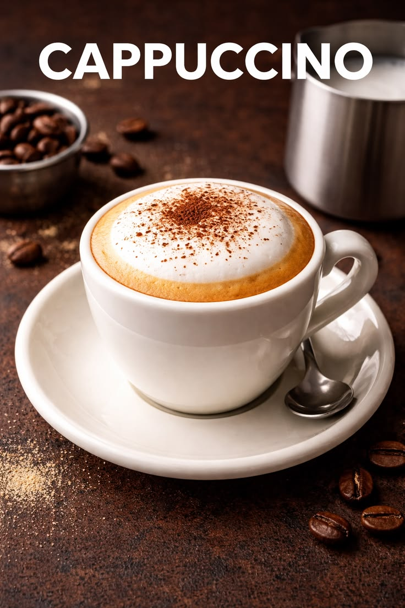
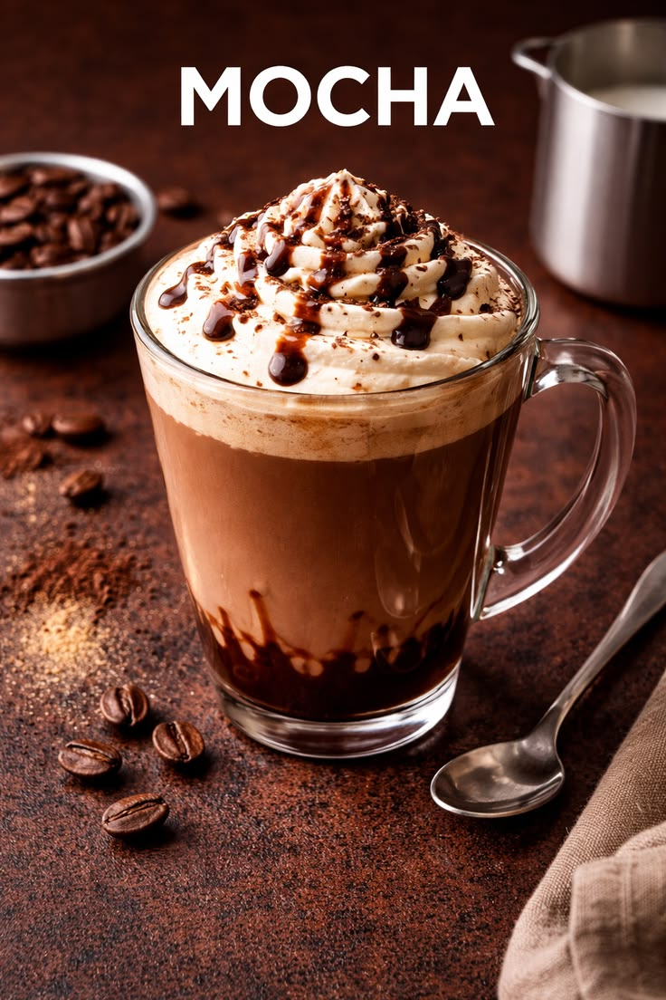

Coffee can be prepared in many different ways. Each drink has its own flavor and texture.
Espresso is the foundation of many popular coffee beverages around the world.
Espresso mixed with steamed milk.
Espresso with milk foam.
Espresso diluted with hot water.
Coffee mixed with chocolate flavor.


